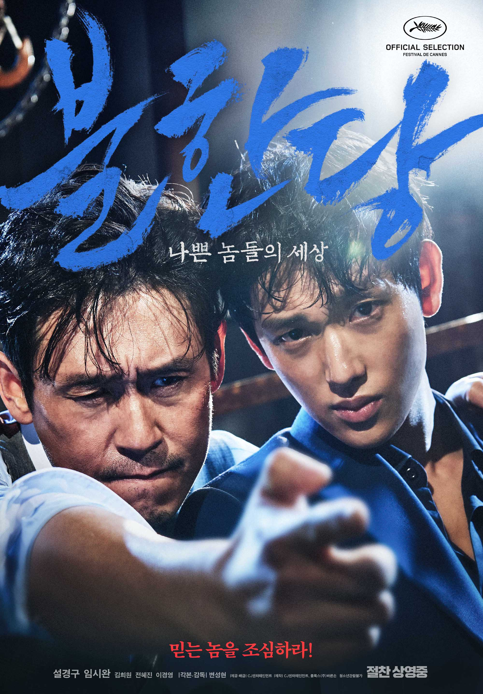

자가격리 10일차
불한당 : 나쁜놈들의 세상 리뷰
오늘은 어제 새벽에 줌으로 봤던 '불한당 : 나쁜놈들의 세상' 영화리뷰를 해보려고 한다. 영화는 경찰이 마약을 밀수, 밀매하는 범죄조직을 소탕하기 위해 잡입형사, 언더커버라고 불리는 현수를 침투시켜서 조직을 소탕하는 그런 이야기를 담고있다. 이런 과정속에서 감독은 경찰과 범죄조직의 대립을 단순히 선과 악의 대립으로 그리지 않는다. 경찰팀장인 천인숙은 일의 성공을 위해서라면, 잡입시킨 부하의 몫숨까지 희생시킬정도로 냉혹한 사람으로 그려진다. 심지어, 현수의 어머니가 죽었을 때, 현수는 팀장에게 장례를 치룰 수 있도록 교도소 밖으로 나갈 수 있게 해달라고 요청하지만, 팀장은 이를 들어주지 않는다. 이와 대비해 등장하는 재호는 표면적으로는 악한 사람이지만, 관객입장에서 봤을때 마음 한켠에 따뜻함을 느끼게 하는 인물이다. 사람을 고문하고 죽이는 일을 밥먹듯이 하는 사람이지만 현수가 장례를 치룰 수 있게 외출하도록 도와주고 현수가 언더커버임을 알면서도 바로 죽이는 것이 아니라 자신의 편으로 설 기회를 주었던, 현수에게만은 따뜻한 인물로 그려졌다. 영화에서는 어떤 범죄조직의 소탕보단 이 두사람의 관계를 보여주는데에 초점을 맞춘다.
내가 만약 현수였다면? 재호였다면? 이라는 생각을 해보았다. 현수는 의도적으로 재호에게 가까워지려고 접근했으나, 이 와중에 자신의 모든것이였던 '어머니'가 죽게된다. 현수에게 '어머니'라는 존재는, 어머니의 건강을 위해서라면, 자신이 3년동안 자진해서 감방에 들어갈 정도로 자신을 희생해서라도 지키고 싶었던 사람이였던 것 같다. '어머니'의 죽음과 함께, 어머니의 장례도 치루지 못하게 하는 팀장과 같이 생활하는동안의 정도들고, 자신을 생각하며 위해주는 재호를 보며, 현수는 재호에게 스스로 자신이 경찰인 것을 밝힘으로써 재호에게 믿음을 보여준다. 재호는 현수가 칼에 맞을뻔한 자신을 구해주면서 현수에게 고마움을 느낀다. 하지만, 중간에 재호는 현수가 언더커버임을 알게되고, 현수를 자기의 편으로 만들려는 계획과 함께 현수의 어머니를 죽이라는 명령을 하게 된다. 개인적으로 극중에서 재호가 현수가 경찰임을 알았을때, 그를 바로 죽이지 않은것에 놀랐다. 재호는 극중에서 자신을 죽이려 했던 다른 조직원에게 엄청난 고문을 해 죽여버리고 가족애따위는 전혀 없는 그런 냉혹한 인물로 그려지지만, 현수에게서만큼은 '우정'과 '의리'를 넘어선, '사랑이나' ,'가족애 같은' 특별한 감정을 느꼈던 것 같다. 사실 재호는 신뢰나 의리 따위도 없고 자신의 편에 있던 사람도 단칼에 죽여버릴 수 있는 그런 사람이다. 극 중에 재호가 자신의 나쁜 경험을 바탕으로 '사람을 믿지마라! 상황을 믿어야한다.'한 대사에 잘 나타나는 것 같다. 하지만 현수에게만큼은 달랐다. 이런 깊은 감정선이 영화를 느와르 보단 퀴어쪽 색깔이 짙어지게 만드는 것 같기도 하다.
개인적으로 가장 기억에 남는 장면은 현수가 재호를 죽이는 장면이다. 마지막 장면에서 재호는 현수를 죽일 기회가 있었지만 죽이지 못했다. 건물 밖으로 나온 재호는 천팀장이 운전한 차에 치여서 땅바닥에 누워있게 된다. 카메라는 재호의 시선으로 전환되어서 천팀장을 죽이는 현수를 보여주고, 점점 자신을 향해 다가오는 현수와 함께 3인칭으로 전환된다. '현수야 너는 나같은 실수 하지마라' 라는 재호의 대사에 이어, 현수는 재호를 죽인다. 여러 리뷰들을 보면 이 둘의 관계를 단순한 우정보단 사랑의 입장에서 그리는 시선이 많았다. 필자는 개인적으로 아빠와 아들같은 관계라고도 생각이 들었다. 재호가 자신을 배신했던 다른 파트너들은 다 죽였음에도 현수에게는 기회를 주고 자기편으로 만들었던 것도, 피를 나누진 않았지만 현수에게 부성애를 느껴서 그런것이 아닐까 하는 생각이 들었던 것 같다. 어머니가 죽고 세상에 홀로 남겨진 현수도 그 과정에서 자신을 진심으로 위해주었던 한 사람에게 의지하고 싶은 감정이 들었던 것 같다. 120분의 러닝타임동안 지루할 틈이 없었고, 명대사도 정말 많고 감정선도 탄탄해서 몰입이 잘 되었다. '현수는 재호를 사랑하지 않았지만 믿었고, 재호는 현수를 믿지 않았지만 사랑했다.' 라는 말이 딱 맞는 영화였던 것 같다. 마지막에 봤던 뮤비가 여운이 많이 남았던 영화였다. 뮤비 저작권때문에 따로 첨부가 안되어 링크를 걸어두겠다.
안예은 - 파아란 Fan M/V